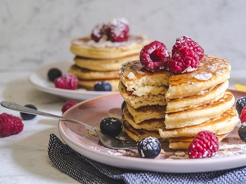

Fluffy pancakes Recipe

These pancakes are simple to make and a great way to start your morning. Or if you are like me,
sometimes having then for dinner is self care.
Ingredients
2 tablespoons white sugar
2 teaspoons baking powder
1 teaspoon salt, or to taste
2 tablespoons vegetable oil
Instructions
Step 1:Combine flour, sugar, baking powder, and salt in a large bowl.
Make a well in the center, and pour in milk, oil, and egg. Mix until smooth.
Step 2:Heat a lightly oiled griddle or frying pan over medium-high heat. Pour or scoop batter onto the griddle, using approximately 1/4 cup for each pancake;
cook until bubbles form and the edges are dry, 1 to 2 minutes. Flip and cook until browned on the other side. Repeat with remaining batter.
Tips
Best served with maple syrup and strawberries and blueberries as toppings. Enjoy!